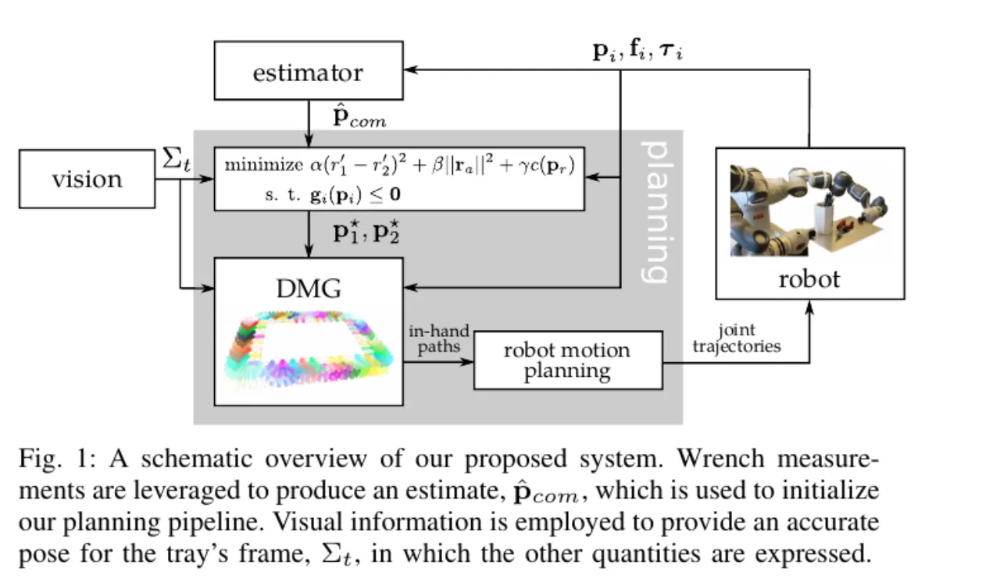
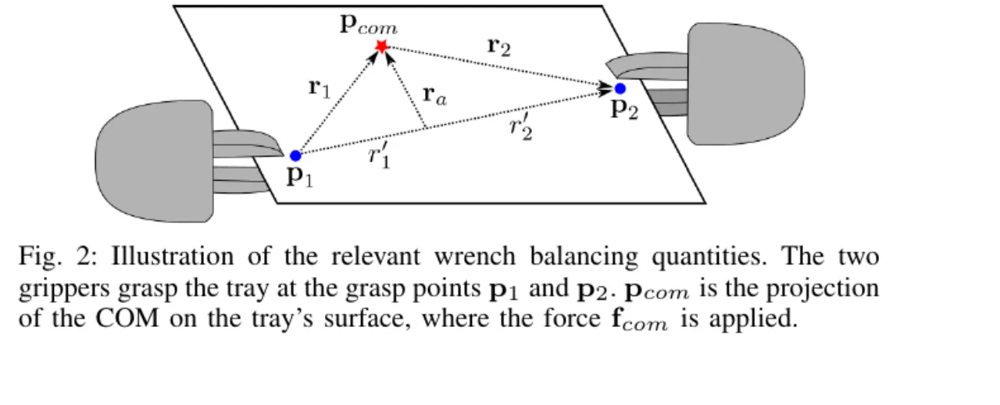
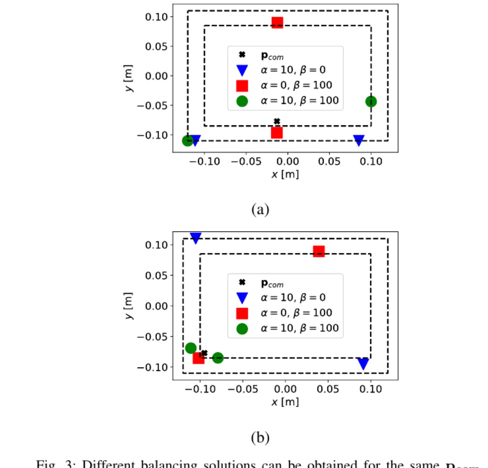
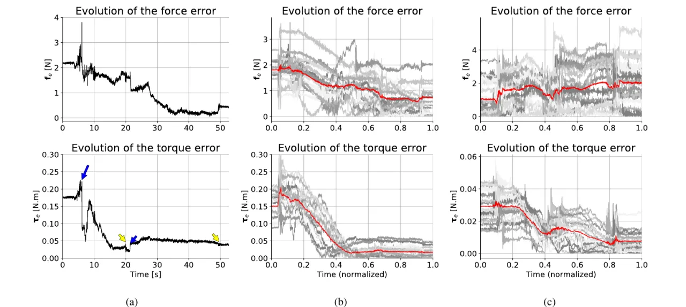

双臂机器人靠共同抓取一块刚性托盘来突破单臂负载极限，但只要托盘上物体的质量分布不均，两只手臂承受的 wrench（力/力矩）就会显著不同，甚至超出各自的 payload。本文把"平衡 wrench"建模成一个几何优化问题，并首次用离散双臂手内滑动（一次只动一只手）把抓取点滑到更均衡的位置，用视觉 + 力/力矩感知闭环执行。
双臂系统能通过共同抓取一个物体来突破单臂的抓取力与负载上限。但作者指出：如果被抓物体质量分布不均，两臂承受的 wrench 会明显不同——"a stark increase in the wrenches experienced by the other"——这会显著增大超出单臂最大抓取力或 payload 的风险。当托盘上不断放置/移走物体时，其 center of mass (COM) 会移动，抓取点也需随之调整。
"We consider the problem of balancing the wrenches experienced by a dual-arm robot grasping a rigid tray. … Our approach is based on sequential sliding motions of the grasp points on the surface of the object, to attain a more balanced configuration."
为什么不能用现成方案？作者逐一排除：(1) regrasp 重新抓取需要松开抓取，在托盘还载着物体时会造成掉落，不可行；(2) 用非抓握式（non-prehensile）平衡抓取会导致托盘大幅倾斜，同样不适合载物场景。因此他们转向 dexterous manipulation：在不松开抓取的前提下移动接触点。由于用的是并联夹爪（parallel grippers，本身不灵巧），方案依赖 extrinsic dexterity——利用双臂系统的冗余度，让一只夹爪的手指沿托盘表面滑动而不改变托盘位姿。

方法分三步：先把 wrench 分布几何化建模并写成一个优化问题（求目标抓取点）；再用 Kalman filter 从力/力矩量在线估计 COM；最后用扩展后的 DMG 规划两只夹爪的手内滑动路径，逐一顺序执行。
两夹爪在 p₁、p₂ 抓取托盘，COM 在托盘表面的投影记为 pcom，受力 fcom。定义虚拟连杆（virtual sticks）r₁ = pcom − p₁，r₂ = p₂ − pcom，抓取点相对位置 pr = p₂ − p₁。各点受力按投影比例分配：f₁ = (1−r′₁)fcom，f₂ = (1−r′₂)fcom，其中 r′i = (ri⊤pr)/‖pr‖²。两点的力矩由 ra = pcom − (r′₁p₂ + r′₂p₁) 决定，τi = ra × fcom。

Definition 1（Balanced Wrenches）：当两抓取点测得的 wrench 满足 fe = f₂ − f₁ = 0 且 τe = (τ₁+τ₂)/2 = 0 时，即为平衡。于是"平衡 wrench"变成寻找抓取配置 (p₁*, p₂*) 的优化问题（式8）：min α‖fe‖² + β‖τe‖²，约束 gi(pi) ≤ 0 限定抓取点落在托盘可达区域；α、β > 0 补偿力与力矩单位不同的权重。
在物体不滑动、不滚动的假设下（ḟcom = 0），误差完全由抓取点与 COM 的几何位置决定：fe = (r′₁ − r′₂)fcom，τe = ra × fcom。据此改写为 Problem 1（式10）：min α(r′₁ − r′₂)² + β‖ra‖² + γ c(pr)。其中 c(pr) 是一个非线性项（式11）：当 ‖pr‖ 小于阈值 dmin 时施加惩罚，避免解把两抓取点挤得太近（几何上不可行）。
Problem 1 依赖 pcom，而它会随托盘上物体的增减而移动，无法预知。作者用 Kalman filter 在线估计：过程模型 ṗcom = 0、观测模型 z = C p̂com（式12–14），观测量由实测力/力矩构造，并假设施加力沿托盘表面法向 n，从而由测量法向投影得到 r′i。任务开始后即冻结当前估计，直至任务完成。
DMG（Dexterous Manipulation Graph）原本描述"单个夹爪的一根手指如何沿物体表面移动"：图节点是接触点 + 可连续旋转的朝向区间，边表示手指可在两点间滑动。本文把它扩展到两只夹爪同时握持——为每只夹爪各维护一套 in-hand path，且规划时要同时考虑对侧手指（避免自碰撞、避开托盘上的障碍）。优化器（SLSQP）先给出目标抓取点，DMG 再用 Dijkstra 搜索最短滑动路径，并把跨越障碍的边加大代价以保证无碰撞。
关键的"离散"体现在执行上：一次只滑动一只夹爪，另一只保持静止并牢牢抓住托盘。这种 discrete coordinated motion 既简化了规划，又通过始终有一只手固定抓取来减少托盘的意外运动。Algorithm 1（Find In-Hand Paths）比较"先动谁"的两种顺序，取合并路径更短者。最终路径经插值满足接触约束，用 TRAC-IK 求关节位形，再生成两臂的关节轨迹并顺序执行。

平台为 ABB YuMi 协作双臂机器人（单臂 payload 极限约 500 g）。每个手腕装一枚 OptoForce HEX 六轴力/力矩传感器；托盘位姿由外部 Microsoft Kinect2 检测 AprilTag 标记得到。托盘为矩形铝面板，面积 300×200 mm、重 186 g；托盘+夹爪+力矩传感器合计约 600 g，已超过 YuMi 单臂 500 g 的 payload——因此必须双臂共抓。全程 γ = 1000、dmin = 0.15 m；观测协方差噪声取 0.1·I，过程噪声取 0.01·I。作者分两种任务考察：只平衡力（β=0）与只平衡力矩（α=0）。
| 任务 | 权重设置 | 力矩误差 τe | 力误差 fe | 平均执行时间 | 抓取稳定性 |
|---|---|---|---|---|---|
| Force balancing | β=0, α≤10 | 0.15 → 0.025 N·m（降低） | 下降（见 Fig.4a/b） | 45 s（38–53 s） | 稳定 |
| Torque balancing | β=100, α=0 | 明显下降（Fig.4c） | ~1 → 2 N（略升） | 20 s（15–27 s） | 仍稳定 |
Force balancing：展示了 15 次连续执行（Fig.4b，均值以红线标出）。作者强调"The successful force balancing experiments do not increase the torque error, but actually contribute to lowering it"——报告的所有成功执行都把力矩误差从平均初值 0.15 N·m 降到平均终值 0.025 N·m。
Torque balancing：20 次运行（Fig.4c）。执行时间更短（因计算出的路径更短）。尽管力误差平均从约 1 N 升到 2 N，抓取仍保持稳定。相较之下，只平衡力的问题里，只有那些"恰好也降低了力矩"的轨迹才成功。

作者的核心观察：最小化力矩对维持托盘稳定平衡至关重要。只平衡力时，成功的执行无一例外都是那些同时降低了力矩的轨迹；而"平衡了力却增大力矩"的轨迹会因超出 payload 导致系统失败（托盘掉落）。这解释了为何 Problem 1 中的 β‖ra‖² 项不可或缺。
作者明确表示系统依赖所需路径存在 IK 解，"if there are no IK solutions for a desired trajectory on the tray, we do not execute the balancing task"；避开动态障碍留作 future work。
建模时设 ḟcom=0，即假设 COM 在运动中不变、托盘上物体不滑不滚。这限制了对易滚动或松散负载的适用性。
为简化规划并减少托盘意外运动，作者刻意采用 discrete、一次动一臂的执行方式；当 COM 变化时需由用户提示系统重新执行流程，而非全程在线跟随。
Fig.4 中部分轨迹受托盘相对 YuMi 指尖的小幅 pivoting/tilting 影响；作者建议改用接触面更大的指尖可缓解并保证全程牢固抓取。
实验只在单一 YuMi + 一块 300×200 mm 铝托盘上验证；未报告不同形状/材质物体、多物体或更大负载下的泛化。